The Boston bar Cheers from the TV show of the same name and the Rosebud Motel from Schitt’s Creek are just a couple of the famous fictional small businesses that have real-world counterparts. And while this isn’t the case for every fictional business, the ones that accept customers in real life can give us an idea of what the 100% fictional ones might cost to run if they were real.
Using real-world cost data and guidance from the Small Business Administration (SBA), we calculated how much it would cost the characters from numerous popular shows and movies to get their small businesses started in 2022.
Methodology
In January of 2022, we collected all of the data required to estimate how much some of the most important parts of running a small business, including rent, utilities, insurance, and payroll, would cost each of our fictional businesses.
When determining rental costs, we calculated the approximate square footage of each fictional small business and averaged together multiple similarly-sized listings from the same city or state to obtain an estimated rental rate. Utilities were determined based on a business start-up article’s calculation of $2 per square footage of space.
For insurance, we based our estimates on articles for small business start-up needs and insurance companies’ general quotes, and for payroll, we took the number of workers employed by each fictional business and added up all of their individual wages (the wages were based on the applicable state or country’s minimum wage and the 40-hour work week).
Inventory and equipment costs were not included in this data as accurate costs for business owners are not readily available, nor is an exact inventory list for each business. Miscellaneous charges such as a liquor license, cleaning fees, and more were also not included in these costs.
It’s worth noting that a down payment would be required for the purchase of a motel, but this cost is not included in the first-month cost estimate for the Rosebud Motel to avoid outliers.
Hospitality Small Business Breakdown
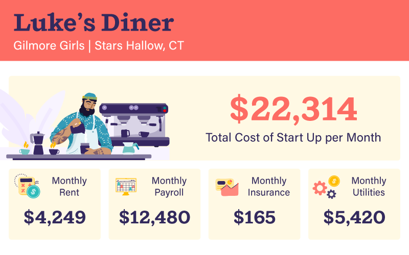Luke’s Diner (Gilmore Girls) - Fans of the series Gilmore Girls will recognize the fictional town of Stars Hollow, Connecticut, and its popular lunch spot Luke’s Diner. Overall, the restaurants and cafes run higher costs than the retail establishments that we’ll cover later. This is mostly due to their employment of more workers (lots of the shops you’ll find in the next section only staff one or two employees). That being said, between payroll, rent, and utilities, we estimate that Luke’s averages a monthly start-up cost of over $22,000.
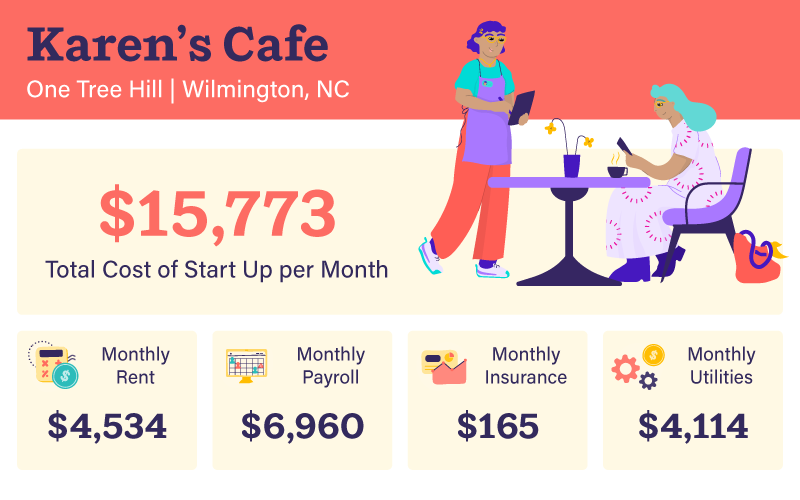Karen’s Cafe (One Tree Hill) - While the building that acted as the set for Karen’s Cafe is now home to an Outdoor Equipped and Redix, fans of One Tree Hill can visit the city where the show was primarily filmed, Wilmington, North Carolina, to see many other locations that were included in the show. As for costs, the much lower minimum wage of NC compared to CT helps keep expenses down for Karen’s, which we estimate would cost just over $15,750 monthly to operate.
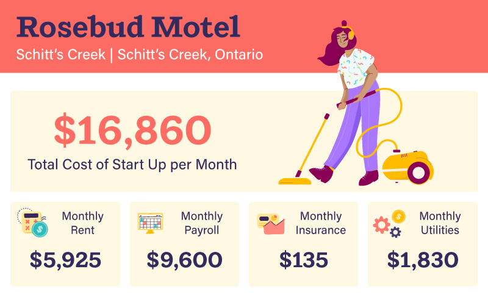Rosebud Motel (Schitt’s Creek) - The Rosebud Motel was a unique case as it’s the only variety of business in this article that would likely require a downpayment and a mortgage over monthly rent, but we estimated those costs anyway. After the downpayment of approximately $60,000 is taken care of, you’re looking at an average monthly cost of $16,860. Even without the down payment, that's pretty steep for a rural town in Ontario.
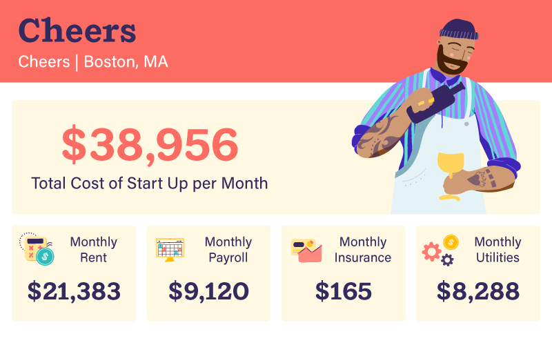Cheers (Cheers) - The iconic bar from the smash 80s sitcom of the same name actually skewed our average quite a bit, as its estimated costs are almost unbelievably high. Boston’s high minimum wage for four employees combined with higher-than-average utility costs and the incredibly high price of renting a bar in Boston gives us a grand monthly cost estimate of almost $40,000! The bar’s real-life counterpart is still around though, and it’s surely raking in the big bucks as visitors can buy drinks, food, and merch inspired by the show.
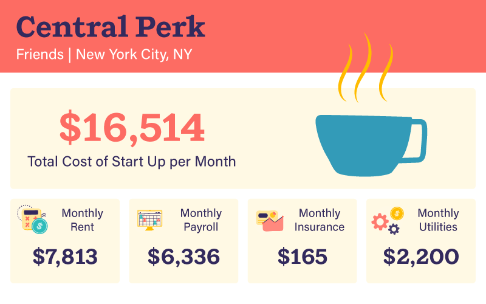Central Perk (Friends) - With that crazy-high Greenwich Village rent and New York City minimum wage (even though the cafe has just three employees), the famous fictitious location in Friends boasts monthly costs that are lower than the average of all of our listed hospitality-based small businesses ($16,514.33 versus $20,224).
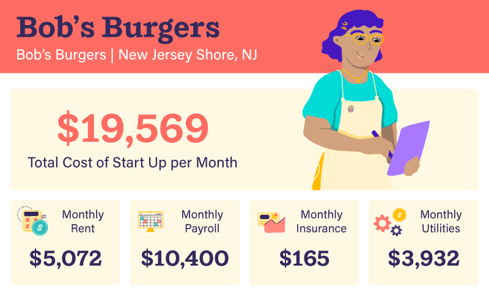Bob’s Burgers (Bob’s Burgers) - Television’s other Jersey Shore favorites, the Belcher family are the only business owners on this list that also live where they work (or right above it, really). Renting close to the shore and paying minimum wage to five people combine to create a pricey monthly cost of operation of almost $20,000 per month.
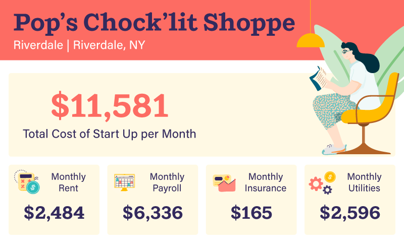Pop’s Chock’lit Shoppe (Riverdale) - The dark and moody diner in Riverdale is just the third restaurant on our list, yet it’s marginally cheaper to run than both Bob’s Burgers and Luke’s Diner. Not being near the beach like Bob’s keeps rent down, and having half of the staff of Luke’s helps with payroll, leaving us to estimate that Pop’s costs about $11,580 to operate monthly. That’s about half the price of our average fictional hospitality business!
Retail Small Business Breakdown
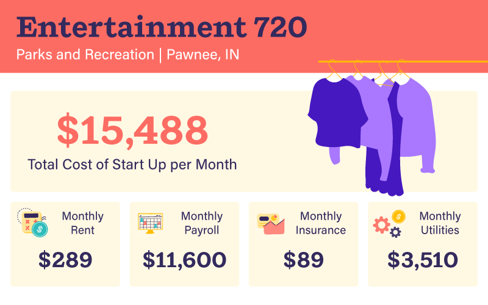Entertainment 720 (Parks and Recreation) - It’s no wonder Pawnee's premier, high-end, all-media entertainment conglomerate Entertainment 720 went under so quickly. With monthly estimated costs exceeding $15,000 and no clients outside of the friend of the business Leslie Knope, Tom and Jean-Ralphio just couldn’t turn a profit through printing their own promotional cash and paying NBA players to help them dunk on the company’s private basketball court.
Note that we continued using the relevant state’s minimum wage to calculate payroll here even though some of Entertainment 720’s employees say they make high salaries in the show. This was done for consistency purposes, but a real-life Entertainment 720 could rack up first-month costs of over $150,000.
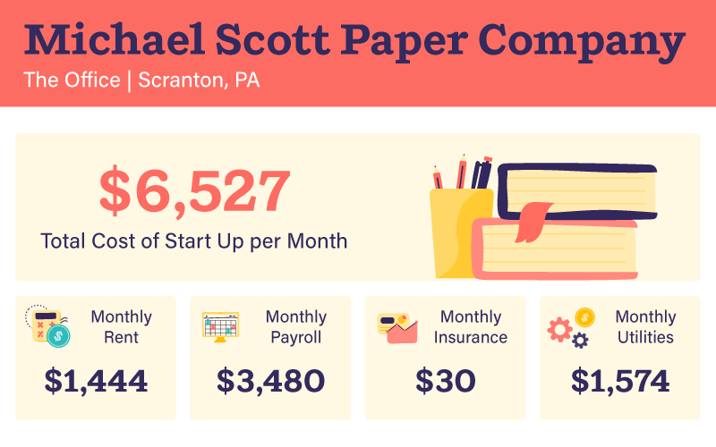Michael Scott Paper Company (The Office) - Dunder Mifflin's arch-rival for less than a season, the Michael Scott Paper Company has the lowest estimated first-month costs of all the businesses in this article. These inexpensive operating costs are actually what gave them enough of an edge to negotiate a buyout, but had that not worked out they would have soon gone out of business. Perhaps relying on insider information and stolen clientele isn’t the smartest strategy?
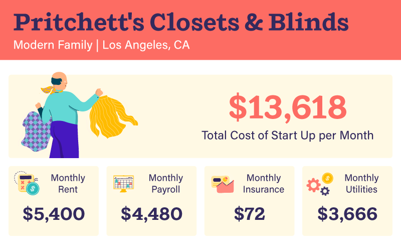Pritchett’s Closets & Blinds (Modern Family) - How Jay Pritchett made enough money to afford that house by selling closets has confused fans of Modern Family for over a decade, but maybe there is just enough demand for a good closet out there. While that LA rent isn’t cheap, the small number of employees a family business like Pritchett’s Closets & Blinds requires to operate does help keep costs down a bit.
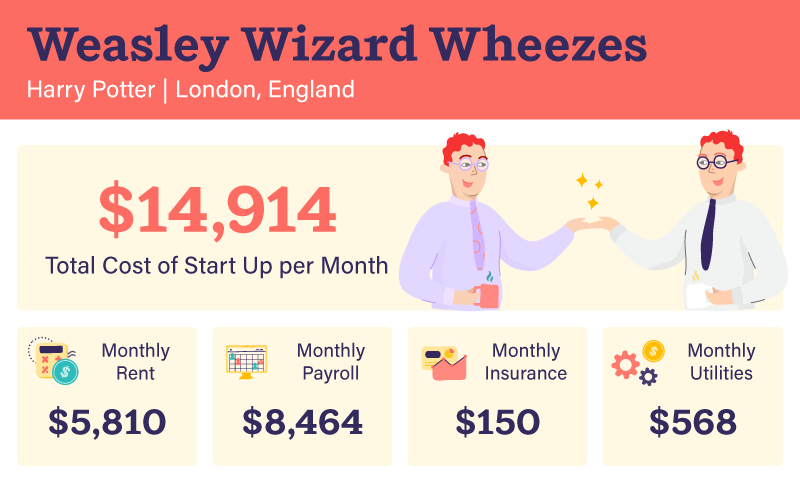Weasleys’ Wizards Wheezes (Harry Potter) - Currency should be a translation issue here as Weasleys’ Wizard Wheezes is our only European fictitious business, but we’ll keep everything in USD for simplicity’s sake. The minimum wage in London is surprisingly low for one of the biggest cities in the world at right about $10.50 USD for anyone over 25, but with pricey rent and five employees, the joke shop’s monthly costs are just under $15,000 USD (the average for our retail businesses is right under $11,500 USD). At least the startup costs were covered by Harry Potter’s Triwizard Tournament winnings!
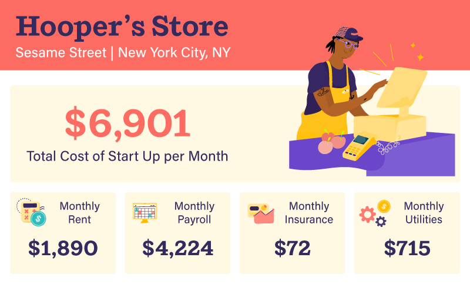Hooper’s Store (Sesame Street) - The Sesame Street staple has been around since the show premiered in 1969, and has seen four different owners in its time. The late Will Lee played the store’s owner, Mr. Hooper, until he passed away in 1982, which then led to its inheritance by David (played by Northern Calloway). David sold the store to Mr. Handford (primarily played by David L. Smyrlin) in 1989, but it was once again “sold” to its current owner, Alan (played by Alan Muraoka). The rent is surprisingly cheap for New York City, and the payroll is quite high for only having two employees, but monthly costs are still below average at $6,900, which is maybe why the store has experienced such longevity!
Closing thoughts
When it comes to running a small business, there’s little room for error. According to the Bureau of Labor Statistics, 20% of new businesses fail within their first two years of being open. 45% fail sometime within the first five years, and 65% fail within the first 10 years. Only 25% of new businesses make it to 15 years or more.
So if you’re starting a business of your own and want to avoid becoming the next Entertainment 720, employing software solutions like Deputy is a good way to optimize processes for maximum cost-efficiency. Let us help you schedule your staff, simplify your timesheets, and manage any labor wages with a free trial of Deputy today.
Important Notice
The information contained in this article is general in nature and you should consider whether the information is appropriate to your needs. Legal and other matters referred to in this article are of a general nature only and are based on Deputy's interpretation of laws existing at the time and should not be relied on in place of professional advice. Deputy is not responsible for the content of any site owned by a third party that may be linked to this article and no warranty is made by us concerning the suitability, accuracy or timeliness of the content of any site that may be linked to this article. Deputy disclaims all liability (except for any liability which by law cannot be excluded) for any error, inaccuracy, or omission from the information contained in this article and any loss or damage suffered by any person directly or indirectly through relying on this information.